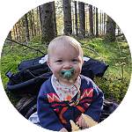
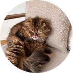

Olle Andreasson
Creative EngineerHello and welcome to my little corner of the internet, I am a software engineer, gamer, artist, plant lover... and much more located in Gothenburg, Sweden. I have over 10 years of experience in startups, consulting and large enterprises across Scotland, Germany and Sweden.
When I applied to University of Gothenburg in the spring of 2010 I was torn, because at the same time I also applied for an acting school a bit outside the city. Two completely different paths in life, one creative path and one rational (in a dual sense). As you might understand, I chose the latter.
Luckily, the route we take professionally has no real imprint on what we really are. That's why I call myself a Creative Engineer, and that's something I try to show with this place which I wrote during my parental leave in 2025 in native JavaScript (see that as a personal opinion about modern web development if you want).
Oted OnlineThe algorithm running in the canvas is similar to Conway's Game of Life with some personal adjustments. The architecture is event-driven where one tile can call its neighbours limited by a declining strength of the color it contains. It's mainly event-driven because I found the approach suitable to enable tiles to talk to each other. Check it out on GitHub!
Disclaimer: This website was made entirely without AI! Did you know that in May 2025 the amount of content created on the internet by AI surpassed content made by us. When an ever increasing amount of what we consume online is just a generic sum over all created in the past, what does it do to the internet and what we consume? When the data fed to the models is increasingly also made by AI? Where does poetry live then?
InspirationsBelow are a few visionaries that has shaped me to the man I am today, they all walked their own path in life and strived towards seeing truthfully on the world and society.
Buckminster Fuller
He dedicated his entire life for the better of humanity and believed that by continuously doing more with less with science and technology, we can free society from scarcity and there need not be any suffering.
Alan Watts
Although criticized by the Zen community I have nothing but gratitude to Alan for introducing Zen to me. His lectures in the Out of your mind series is something I return to over and over and it has brought me back to the cushion and the wall countless times.
Jacque Fresco
Another man who walked his own path in life (yes it's a theme here). Just like Mr Fuller, Jacque had ideas not bound by the status quo. He envisioned a society free from the constraints of the monetary system, based on a scientific approach to how we really eliminate scarcity and divide it between us. Because will we ever have peace as long as some have nothing while others have everything? Is it really human nature to fight? Or do we fight simply because resources are not distributed properly?
Kjell Höglund
"Men för mig är ju hela showen gåtfull. Många människor tycker inte det är något konstigt. Stjärnor på himmelen, atomer och det växer träd å de…. Men jag liksom ropar mot himmelen och undrar vad in i helvete är det för nånting va? Och där nånstans tror jag skillnaden ligger, att man antingen tar livet för givet eller bara tycker det är fullständigt obegripligt."
Kjell is not just a musician in my mind, but a poet and a philosopher. He delivers his ideas about the world with a perfect mix of humor, thought and catchiness. I keep finding new meaning in his work still today.
Journey
A timeline of significanceParenthood
Mid November 2024 my firstborn son came to be and he has changed my world forever. As other parents know perspectives changes and life takes on a new meaning and I am so lucky to experience this unfolding of conciousness and our little family.
All roads lead home
Borta bra men hemma bäst is a saying in Swedish and it sums up the decision to move back to Gothenburg. I wanted to be close to my family and maybe one day get one of my own, perhaps even a garden for Cashew and all my plants!
Still working with GRID on a remote basis I took on the role as Staff Engineer which has widened my role significantly and I truly enjoy the challenges that it brings.
Liebe Berlin
I have so much love for the city of Berlin and the time I spent there and it is hard to describe this nostalgic period. Berlin is a thriving place both in and out of tech and the people and the experiences I had here grew me into the man I am today.
Soon after the move I switched to a new job in a larger company in the dating industry. I got to work with some very talented people and learned GoLang inside and out. We also dealt with a lot of purchased software which forced me to learn many other technologies.
After a few years I needed a break and took some time unemployed before I focused my attention again on the start-up sector and found a job at GRID Esports. GRID is a perfect match for me not only because I get to work with my favorite game Dota 2, but also because the tech stack is super interesting, I especially enjoy real time data processing challenges using Kafka.
I also got Cashew! She is the cutest, grumpiest and most adorable little thing ever created. Love you little rat <3
Hello Scotland!
After my degree I spread my applications wide across Europe with a focus on start-ups. I was very close ending up in London, but a small fashion company contacted me from Edinburg and I got my first job as a Backend Engineer working mostly in NodeJS. I spent the following years in the beautiful city of Edinburg, working and making connections with many important people in my life. I also started a Meetup to play boardgames, it is still the largest board game meetup in the city!
Consultancy
My first experience within the tech industry was during the last years of my CS program and it was naturally an intense period with both school and work. It however put me at a great edge when I applied for work after, since most new grads have no work experience when applying for their first job.
University
I finally decided to do something more useful and applied late to the Computer Science program at the University of Gothenburg and got in! It's a good program with relevant but hard courses. I still remember the first we had was functional programming with Haskell and by the end of the semester the class had literally halved in size. This was an ongoing trend and only a handful of students made it through the entire program. That I was one of them is something that makes me proud to this day.
Blunder years
The years prior to University I was living peak life according to my 20 year old self. I moved here and there in Europe and played Musical Saw in bars and for good money in the street. Youtube might or might not still have glimpses of this life.